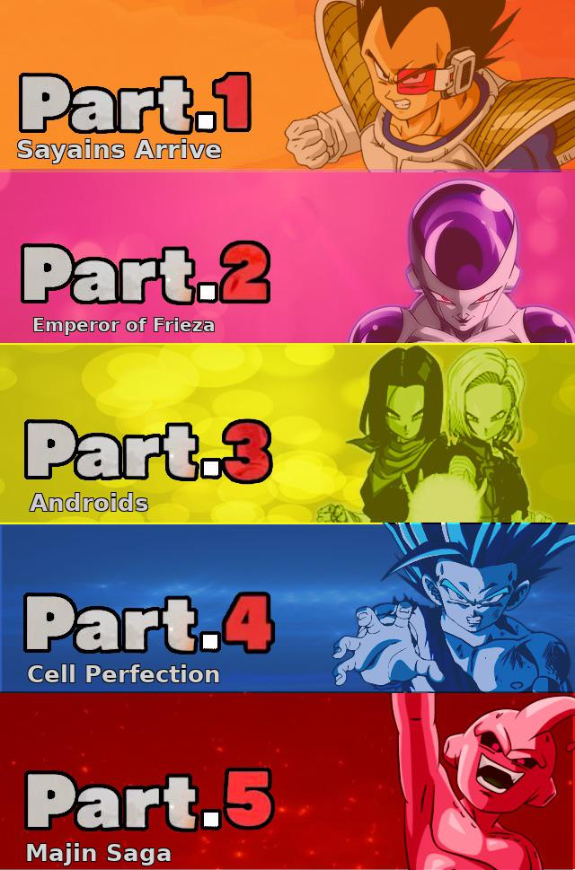

Гра в сюжетному режимі важлива для розблокування ключових функцій гри, таких як PvP-режим, Турнір сили та Гіпервимірний кооператив. Якщо вам не цікаво стежити за розповіддю, гравці все одно повинні продовжувати режим історії, щоб вони могли грати в інші ігрові режими. Такі важливі речі, як спорядження, досвід та інші речі, також можна отримати, проходячи певні етапи в сюжетному режимі, щоб ще більше підвищити рівень потужності свого персонажа.
